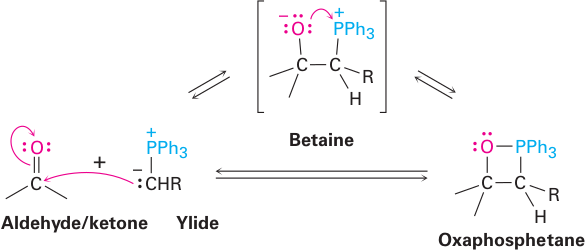

The Wittig Reaction
In 1954, Georg Wittig reported a method for the synthesis of alkenes from aldehydes and ketones using compounds called phosphonium ylides: A neutral molecule with positive and negative charges on adjacent atoms. For his pioneering study and development of this reaction into a major synthetic tool, Professor Wittig shared the 1979 Nobel Prize for chemistry. (The other recipient was Herbert C. Brown for his studies of hydroboration and the chemistry of organoboron compounds.) A Wittig synthesis is illustrated by the conversion of cyclohexanone to methylenecyclohexane. In this reaction, a C=O double bond is converted to a C=C double bond. A noteworthy aspect of this reaction is that a strong thermodynamic driving force is provided by formation of the very strong P—O bonding interaction in the phosphine oxide product.
 |
+ Ph3P+—C−CH2 | ⟶ | + Ph3P=O |
We study the Wittig reaction in two stages: first, the formation and structure of phosphonium ylides and, second, the reaction of a phosphonium ylide with the carbonyl group of an aldehyde or ketone to give an alkene. The Wittig reaction is especially valuable as a synthetic tool because it takes place under mild conditions and because the location of the carbon-carbon bond is unambiguously determined. The only disadvantage of the Wittig reaction is that it is subject to steric hindrance. Yields are generally highest with aldehydes that have the least hindered carbonyl group, and are lower with ketones in which the carbonyl group is more hindered. Phosphorus is the second element in Group 5A of the Periodic Table and, like nitrogen, has five electrons in its valence shell. Examples of trivalent phosphorus compounds are phosphine, PH3, and triphenylphosphine, Ph3P. Phosphine is a highly toxic, flammable gas. Triphenylphosphine is a colorless, odorless solid. Because phosphorus is below nitrogen in the Periodic Table, phosphines are weaker bases than amines and also good nucleophiles (Section 9.4E). Treatment of a phosphine with a primary or secondary alkyl halide gives a phosphonium salt by an SN2 pathway.
SN2
⟶
Ph3P+—CH3 I−
Methyltriphenylphosphonium iodide
(an alkyltriphenylphosphonium salt)
Because phosphines are also weak bases, treatment of a tertiary halide with a phosphine gives largely an alkene by an E2 pathway. α-Hydrogen atoms on the alkyl group of an alkyltriphenylphosphonium ion are weakly acidic and can be removed by reaction with a very strong base, typically butyllithium (BuLi), sodium hydride (NaH), or sodium amide (NaNH2).
| ⟶ | CH3CH2CH2CH3 | + | −:CH2—P+Ph3 | + LiI | |
| Butyllithium + An alkyltriphenyl-phosphonium iodide | Butane | A phosphonium ylide |
The product of removal of a proton from an alkyltriphenylphosphonium ion is a phosphonium ylide. The important feature of a phosphonium ylide is that the deprotonated carbon atom bears considerable partial negative charge, making it a strong carbon-based nucleophile, analogous to species such as Grignard and organolithium reagents. Just like Grignard and organolithium reagents, the deprotonated carbon of phosphonium ylides readily reacts with the electrophilic carbon atom of aldehyde and ketone carbonyl groups.
Triphenylphosphine is a good nucleophile in SN2 reactions, and yields of the resultant alkyltriphenyl phosphonium salts are high. Because of the positive charge on phosphorus, the hydrogen on the neighboring carbon is weakly acidic and can be removed by a strong base such as butyllithium (BuLi) to generate the neutral ylide. For example:
SN2
⟶
BuLi
⟶
THF

Mechanism The Wittig Reaction
Step 1: Make a new bond between a nucleophile and an electrophile. Reaction of a nucleophilic phosphonium ylide with the electrophilic carbonyl carbon of an aldehyde or ketone gives a dipolar intermediate called a betaine.
Step 2: The betaine collapses to a four-membered oxaphosphetane ring. The name for this four-membered ring system is derived by combining the following: oxa- shows that it contains oxygen, -phosph- shows that it contains phosphorus, -et- shows that it is a four-membered ring, and -ane shows only carbon-carbon single bonds in the ring. Oxaphosphetanes can be isolated at low temperature.
Step 3: Break bonds to give stable molecules or ions. Decomposition of the oxaphosphetane gives triphenylphosphine oxide and an alkene.
|  | ⟶ | Ph3P=O | + R2C=CH2 |
The driving force for a Wittig reaction is the formation of the very strong phosphorus-oxygen bond in triphenylphosphine oxide.
The Wittig reaction is effective with a wide variety of aldehydes and ketones and with ylides derived from a wide variety of primary, secondary, and allylic halides as shown by the following examples.
 Acetone | + | Ph3P+C−CH2CH2CH2CH3 | ⟶ | (CH3)2C=CHCH2CH2CH2CH3 2-Methyl-2-heptene | + | Ph3P=O |
| PhCH2CHO | + | Ph3P+CH2−CH3 | ⟶ | + | + Ph3P=O | |||
| Phenylacetaldehyde | (Z)-1-Phenyl-2-butene (87 %) | (E)-1-Phenyl-2-butene (13 %) |
| PhCH2CHO | + | Ph3P+CH2−C=0-OCH2CH3 | ⟶ | + Ph3P=O | |
| Phenylacetaldehyde | Ethyl(E)-4-phenyl-2-butenoate |
As illustrated by the second and third examples, some Wittig reactions are Z selective, while others are E selective. As a general rule, those Wittig reagents with anion-stabilizing substituents, such as a carbonyl group, adjacent to the negative charge are E selective. We refer to these ylides as being stabilized. We refer to ylides without an adjacent anion stabilizing group as being unstabilized; unstabilized ylides are Z selective. We can write the following resonance contributing structures for a carbonyl-stabilized ylide.
Stabilization of the ylide through resonance decreases its reactivity, allowing an equilibrium to be established during the product-determining step that favors the more stable E isomer.
The real value of the Wittig reaction is that it yields a pure alkene of predictable structure. The C=C bond in the product is always exactly where the C=O group was in the reactant, and no alkene isomers (except E,Z isomers) are formed. For example, Wittig reaction of cyclohexanone with methylene-triphenylphosphorane yields only the single alkene product methyle ne cyclohexane.
(C6H5)3P+C−H2
⟶
THF
(84%)
+ (C6H5)3P=O
By contrast, addition of methylmagnesium bromide to cyclohexanone, followed by dehydration with POCl3, yields a roughly 9:1 mixture of two alkenes.
|
|
1.CH3MgBr ⟶ 2.POCl3 |
|
+ |
|
|
| 9 | : | 1 | ratio |
Because the Wittig reaction is so useful for the preparation of alkenes, chemists have explored several variations of it. One of the most useful of these, known as the Horner-Emmons-Wadsworth modification, uses a phosphonate ester derived from an α-haloester or ketone to generate the Wittig carbanion.